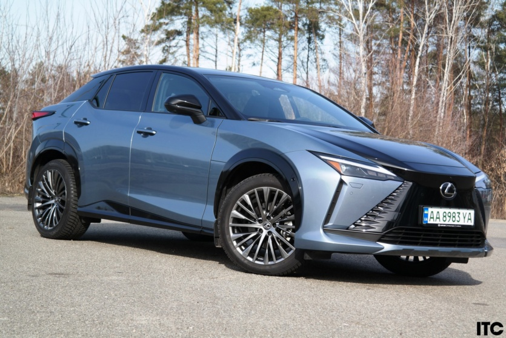
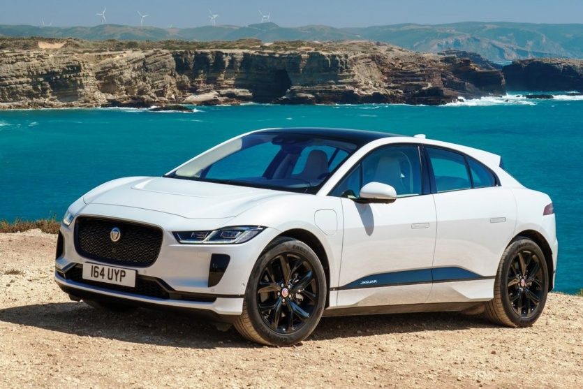

Тест-драйв
LEXUS RZ
Общее позиционирование LEXUS RZ уже было указано выше: это первый электромобиль от LEXUS, причем сразу в формате довольно большого кроссовера и еще и с динамичным дизайном. Можно вспомнить о существовании LEXUS UX 300e — но это была промежуточная модель, созданная преобразованием привычного бензинового/гибридного кроссовера на электромобиль, еще и предложенная на ограниченном количестве рынков. Зато кроссовер LEXUS RZ изначально своего создания был электромобиль, плюс он должен стать более глобальным с точки зрения географии.
Как едет электромобиль LEXUS RZ
Так, как вы ожидаете от LEXUS: очень мягко и осторожно даже на плохих дорогах, очень тихо при движении по городу. Только при высокой скорости на трассах в салоне появляется заметный гул, но в остальных случаях — феноменальная тишина! Вообще электромобиль LEXUS RZ 450e настраивает на спокойное движение, чему также способствует его легкий руль со средней остротой: около 2,7 оборота от упора до упора. Крены довольно заметны, что объясняется мягкой подвеской, а в напряженном повороте кроссовер LEXUS RZ 450e иногда пытается выскользнуть наружу. Из-за этого хочется сбросить темп и немного расслабиться — так получается лучше.
Однако вот в чем нюанс: это именно тот случай, когда «спокойный не означает медленный». Ведь кроссовер LEXUS RZ 450e демонстрирует хорошее ускорение даже в режиме ЕСО, причем это ускорение очень плавное, что прекрасно соответствует общим настройкам подвески. В нормальном или спортивном режимах добавляется еще большая интенсивность откликов на педаль акселератора, однако все равно LEXUS RZ 450e не теряет свою мягкость и плавность в поведении, он и не думает превращаться в жесткий «горячий хетчбек». Хотя по цифрам демонстрирует такую динамику ускорения, которой может позавидовать тот же «горячий хетчбек». Вот вам промежуточные итоги того, как едет LEXUS RZ 450e: он не спешит, но везде успевает.
Итоги тест-драйва LEXUS RZ
Если одной фразой, то кроссовер LEXUS RZ — это очень хороший LEXUS, но не очень хороший электромобиль. Ведь с точки зрения сегодняшнего мира электромобилей, ему явно не хватает большего аккумулятора и меньшего потребления энергии. Частично ответом на это замечание может быть появление в Украине версии с передним приводом, которая еще и попутно снизит цену. Но к тому времени большинство конкурентов-электромобилей выиграют, как минимум, с точки зрения запаса хода.
Вот вам и общий вывод: запрос на кроссовер LEXUS RZ срабатывает лишь в том случае, когда нужен именно LEXUS со всеми его характерными преимуществами, и при этом нужен именно электромобиль (даже не HEV или PHEV-гибрид). Наверное, такая ниша очень небольшая; однако запросы от клиентов все равно могут быть. И теперь им есть что предложить в виде LEXUS RZ.
- Просторный салон и хорошие материалы отделки
- Высокая мощность и хорошие показатели максимального ускорения
- Максимальная комплектация по принципу «все включено» «все включено
- Небольшой аккумулятор и, в то же время, довольно большое потребление энергии
- Нет выбора версий/комплектаций — надо добавить